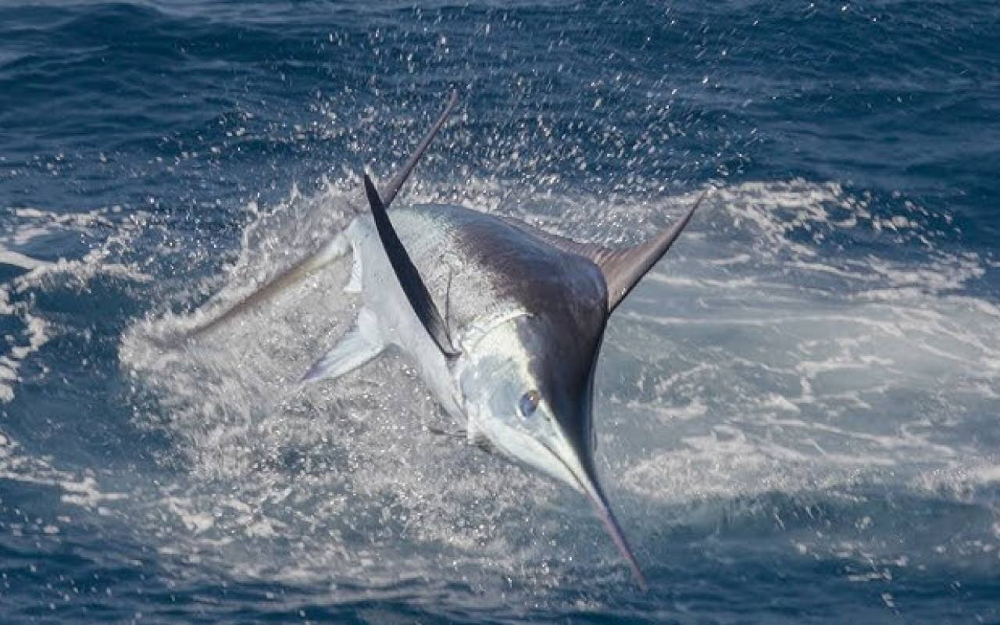

Ready to fish Guanacaste?
Seventeen boats, two bases, one honest recommendation.

For 2023, Go Fish Costa Rica offers an impressive fleet for unforgettable fishing charters in Tamarindo. Whether you're after marlin, sailfish, or mahi-mahi, their variety of boats cater to both beginners and experienced anglers. The fleet includes smaller, more intimate boats ideal for a family outing, as well as larger vessels perfect for seasoned fishermen seeking adventure in deeper waters. All charters come with an experienced captain, top-notch equipment, and personalized service to ensure the best fishing experience possible.
Each boat is well-maintained and fully equipped for a successful day on the water, with knowledgeable guides who know the best fishing spots. You can expect a combination of comfort, safety, and excitement as you embark on half-day, full-day, or multi-day excursions. Whether you’re fishing the nearshore reefs or heading offshore for the big catch, Go Fish Costa Rica has the perfect charter for every angler.
With years of expertise, the Go Fish Costa Rica team can also tailor charters for family-friendly adventures or sportfishing pros looking for the ultimate challenge. Additionally, their eco-friendly practices ensure that every trip leaves minimal impact on the local marine environment, allowing future generations to enjoy Costa Rica's incredible biodiversity.
The team at Go Fish Costa Rica prides itself on delivering not just a fishing trip, but a complete Costa Rican adventure. Beyond fishing, their boats offer great comfort and panoramic views of the Pacific Ocean, often with sightings of dolphins, sea turtles, and even whales.
For those new to sportfishing or visiting Costa Rica for the first time, their experienced captains will guide you through every aspect of the trip, from selecting the right bait to landing the big catch. Meanwhile, seasoned anglers can enjoy the thrill of battling marlin and sailfish in one of the world’s top fishing destinations.
Go Fish Costa Rica also offers tailored packages to fit different group sizes, budgets, and fishing goals, ensuring a trip that exceeds expectations.
Ready to reel in the big one? Book your 2023 fishing charter with Go Fish Costa Rica and experience the best of Tamarindo sportfishing!
Next up: Get Ready for Guanacaste Day: July 25th, 2024! · All posts
Seventeen boats, two bases, one honest recommendation.